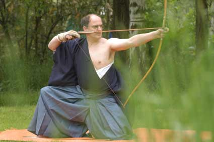

VfL Nagold e.V.
Abteilung Kyudo
Japanisches Bogenschiessen
im Nördlichen Schwarzwald

Peter Knipper im Tsumeai - Foto: Bodemer, WR
Redaktion
Kyudo ist eine der klassischen japanischen Kampfkünste, die sich aus den Waffentechniken der
Samurai entwickelt hat. Mit der Einführung der Feuerwaffen im 16. Jahrhundert verlor der Bogen schnell seine
militärische Bedeutung. Danach wurde er noch zur Jagd, zum Sport und zu höfischer Zeremonie verwendet. Die
technischen und psychologischen Einsichten, die über Jahrhunderte in Übungs- und Kampfsituationen gewonnen wurden,
blieben erhalten. Als erste der Kriegskünste wandelte sich das Bogenschiessen auf der Basis der technischen
Fertigkeiten, genannt Kyujutsu, zu einer existentiellen Übung der Samurai, dem Weg des Bogens. (Kyu = Bogen, Do = Weg)
Obwohl aufgrund verschiedener geistiger Strömungen und historischer Brüche viele Traditionen ausgelöscht wurden,
konnten noch einige Kyudoschulen ihre jahrhundertealte Schiesstechnik bis heute überliefern.
Geübt wird mit dem japanischen Langbogen, der mit seinen ca. 2,20 m Länge traditionell aus Holz und Bambus gefertigt
ist. Demgegenüber werden heute anstatt der äusseren Bambusschichten häufig Materialien wie Glasfiber oder Karbonfaser
verwendet. Auffälligstes Merkmal ist seine asymetrische Form mit einem Drittel seiner Länge unterhalb und zwei Dritteln
oberhalb des Griffs, was eine völlig andere Schiesstechnik erfordert als beispielsweise das westliche Bogenschiessen.
Weitere Besonderheiten sind die traditionelle japanische Kleidung sowie die zeremoniellen Bewegungsformen für Demonstrationen,
Prüfungen und Meisterschaften.
Über acht genau festgelegte Bewegungsphasen, die Hassetsu, werden Körperhaltung und -spannung
präzise koordiniert. Diese Bewegungsabläufe zu beherrschen und immer mehr zu verfeinern ist das Ziel des Übens.
Objektives Kontrollkriterium
dafür ist das Treffen der nur 36 cm grossen Zielscheibe in 28 m Entfernung durch eine korrekte Schiesstechnik.
Wettkämpfe und Graduierungsprüfungen dienen dabei der Feststellung des erreichten Niveaus. Da jeder Schuss ein
Spiegelbild des eigenen Könnens und der momentanen geistigen Verfassung des Schützen darstellt, kommt man dahin,
ständig seine Fähigkeiten und Möglichkeiten zu reflektieren. Im Laufe der Zeit lernt man, dass Kyudo ohne gerichtete
Aufmerksamkeit, Konzentration und Ausdauer in der Übung nicht denkbar ist. Mit den eigenen Fortschritten auf dem Weg
des Bogens wächst die Freude an der Kunst des japanischen Bogenschiessens, die dann auch für den Betrachter in der
Ausstrahlung des Schützen und dem Trefferergebnis sichtbar werden. Kyudo, der Weg des Bogens, bedeutet beständiges
Üben sowie das Verfeinern der Schiesstechnik, bedeutet die Fortführung der Anspannung im vollen Auszug bis der Pfeil
sich von der Sehne löst um dann mit sicherer Technik ins Ziel gebracht zu werden. Kyudo geht über rein sportliche Aspekte
hinaus.